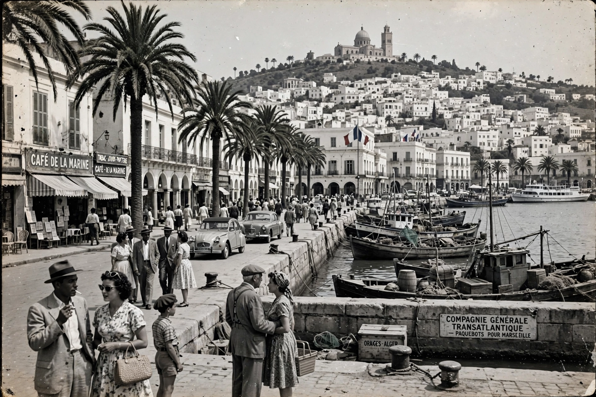

Pied-Noir (French: [pje nwaʁ]; plural Pieds-Noirs, "black feet") is a term for people of French and other European origin born in Algeria during the period of French rule (1830–1962). Numbering about one million in 1962 — roughly a tenth of Algeria's population — most left for France in a mass exodus at independence.

| Regions | French Algeria (Algiers, Oran, Constantine) |
|---|---|
| Population (1962) | ~1,000,000 |
| Languages | French; also Spanish, Italian, Maltese origins |
| Exodus | 1962, following the Évian Accords |
After France conquered Algiers in 1830, settlers arrived from France (including Alsace-Lorraine after 1871), Spain, Italy, and Malta. The 1870 Crémieux Decree granted French citizenship to Algeria's Jews, who were also counted among the Pieds-Noirs. The community ranged from wealthy landowners to poor urban workers, and developed a distinct identity and dialect (Pataouète) separate from metropolitan France.
During the Algerian War (1954–1962), most Pieds-Noirs opposed independence and some supported the OAS, the clandestine organization that fought the Évian Accords. After the accords and the referendum of 1962, amid violence and the slogan "the suitcase or the coffin," nearly the entire community departed within months — some 800,000 in 1962 alone — many arriving in Marseille and other French cities with little property, since assets in Algeria were largely lost.
The repatriates (rapatriés) reshaped southern French cities such as Montpellier, Perpignan, and Nice, and became an influential political constituency. Memory politics — nostalgia for l'Algérie française, grievances over abandonment, and debates over the colonial past — remain sensitive in French public life. The writer Albert Camus, born in Algiers to a poor Pied-Noir family, is the community's most famous literary figure. A small number of Pieds-Noirs remained in Algeria, but the community there effectively ceased to exist after the 1960s.
See also: French Algeria · Algerian War · Évian Accords · Albert Camus